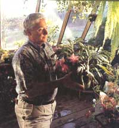
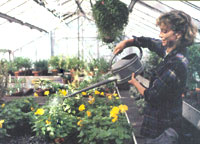
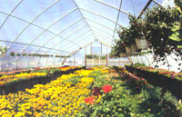
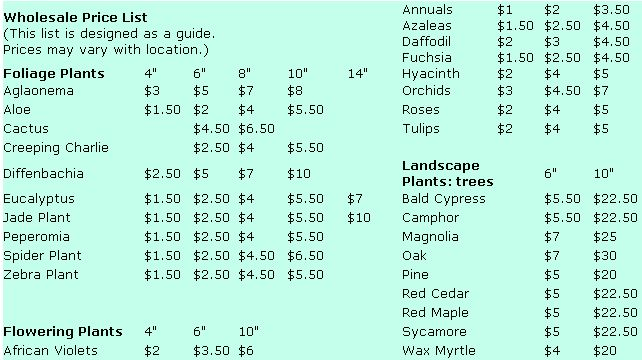

BOOTSTRAP BUSINESS
With a little effort, you can start a greenhouse that will benefit the environment and bring in the profits.
"Find work that you love and you will never work a day in your life!"
After deciding what to plant, sow your seeds in boxes, pots, or even outdoors.
Starting a greenhouse could be the most satisfying endeavor you ever take on, and you can do it almost anywhere-a country farm, a suburb, even an inner city. There's a natural gratitude and pride that comes from watching your seeds or cuttings grow into large, salable plants, until one day-before you know it-you have yourself a business that benefits the environment and brings in the profits. Not only has the demand for herbs and hydroponic vegetables skyrocketed up 300 percent, but tree seedlings of all kinds are in great demand right now. I have studied dozens of greenhouses; listed below are the most effective methods for creating your own business.
Quantity and Variety
The first step to starting your business is determining what plant(s) you want to grow and how much to plant. I suggest starting out with one large, single crop; growing a wide assortment of plants can turn out to be a lot more than you bargained for with all the different watering, spraying, fertilizing, and shade requirements. It's also difficult to get your plants ready to sell at different times and to perform the dozens of different sales and deliveries that must be made with each specific variety, especially when you're first starting out. Why bother with the hassle when you can literally grow 10,000 plants of one type as easily as 2,000 plants of assorted varieties in far less time?
In choosing what type of plants to grow for profit, you must figure out the right combination of profitable plant varieties, sizes, and quantities. Evaluate your technical ability to grow plants. (An honest evaluation will make life a lot easier.) Then decide what is of acceptable quality to you and which plants can be most profitably produced by: 1) estimating plant production costs, 2) comparing expected market prices of individual plants with estimated production costs, and 3) comparing expected net returns among plant varieties and sizes on a common basis.
Growers often base their pricing on competitor's prices. If you plan to do so, consider both the market price and production costs. (See "Wholesale Price List" for ideas.) Knowing production costs of individual plants will help you make plant-selection decisions based on profits. Hint: Annuals, herbs, and foliage are likely be your best-selling plants. All of them had outstanding sales in 1989 and 1990, and I predict they will increase 100 percent in the next couple of years and then never stop increasing.
Sowing Your Seeds
Once you decide what to plant, sow your seeds in boxes, in pots, or outdoors. If you're an inexperienced grower, start out sowing them in pots. They are ideal for slow-germinating seeds, and it's easier to recognize and remove fast-growing weeds without disturbing the seeds. How fast they germinate depends on the temperature, moisture, and how much oxygen they receive. A seed bed in a shaded area provides the best temperature, since hot sun can potentially injure or even kill young seedlings as they develop. Keep your soil moist and well-drained for good oxygen content. Good air circulation through the seed bed will help prevent damping off.
How deep you should sow your seeds depends on their size. The general rule of thumb is to sow them to a depth of three to four times their diameter. If you're dealing with small seeds, sprinkle them on the ground surface and press them into place; then, transplant them as soon as they're large enough to handle. This "hardens" the plant, enabling it to withstand bad weather conditions. Sow seeds in vermiculite, peat moss, sand, or any combination of the three. If you're working with outdoor seed beds, mix in 1 to 1½ pounds of a 1-1-1 ration complete fertilizer. (A coffee cup holds about ½ pound of a complete fertilizer; a one-pound coffee can holds about two pounds).
The purpose of a greenhouse is to get faster plant growth by raising humidity and controlling temperature. Plus, you can create the optimum light intensity and temperature for your particular crop's growth. This is another reason to concentrate on growing large quantities of one or two types of plants, rather than trying to accommodate the needs of several different types. Don't be afraid of experimentation. During the first year, start some plants in late winter for spring, summer, and fall sales, and test a few types during the first hard winter (below 0° F). This will allow you to get acquainted with your greenhouse and the amount of heat you'll need without worrying about losing money.
As for the actual greenhouse, a well-designed, double-poly one uses 50 percent less heating energy than a single-layer, glass-on-fiberglass house for most crops in most areas. While a double-poly greenhouse will last for one to four years, a single-layer one will only last about six months. New greenhouses with low-cost inflated double-poly sheet plastics require a much lower investment than the more expensive glass, acrylic, and polycarbonate structured panel greenhouses.
Maximum Light Transmission
Making sure your plants get plenty of sun requires a fair amount of planning ahead. This includes figuring out a way to obtain maximum light transmission during the dark and cloudy days of winter. Of course, you will have to avoid too much light transmission, which can be detrimental to your plant, during the rest of the year, especially if ventilation isn't properly maintained.
The highest sunlight transmission, 90 percent to 93 percent, is provided by single glass sheets. However, once the glass is properly framed, the best-designed greenhouse will transmit no more than 70 percent of light; and with wires, heating pipes, and obstacles, light will normally measure no more than 60 percent to 70 percent at the crop level. Your other choice is to use double-poly sheets or structured panels of acrylic and polycarbonate. With well-designed framing, you can achieve the same level of light that single-glass sheets will give.
To determine how much shade your plants will need, buy a light meter, which will help you adjust to the right degree. Most of these instruments come with a numbered guide and are easy-to-read. Just hold it away from direct light, in the darkest area of the greenhouse, and read the meter. (Your readings will vary depending on reflections and the direct point of sun).
Shade cloths, which can be applied over the house or within the house on a trellis system, will help you regulate how much light your plant receives. The cloth costs about 10 cents per square foot and lasts about 10 years. While it comes in degrees ranging from 10 percent to 100 percent blockout, I recommend 65 percent to 73 percent for top-quality foliage plants. Many people use 73 percent in hot summer months, and then switch to 55 percent in cooler months.
If not enough shade cloth is used, plants will get sunburned or dry out; too much shade will keep plants from drying out enough. How much shade you will need depends on the types of plants you're growing: Many flowers and vegetable plants do better in the summer under a light shade cloth, but don't need shade during other seasons. Several landscape plants grow well under a light shade cloth. If you have 300 or more hanging plants (hanging two to three feet apart), you can use a 55 percent to 75 percent shading effect. Many people don't know that shade-grown foliage plants may not require shade over the winter.
Shading paint is another option. These white shading compounds, most of which are applied to the outside of the poly-greenhouse cover, rum clear during rains and then back to shade during sunny weather. There are several good paints on the market.
By growing your plants (or at least finishing them off) under a shade house, made of 4 x 4s and 2 x 4s, your plants will be of higher quality. You can use wood slats, log trims, and old lumber as a lathing (narrow strips of wood nailed to rafters, joists, or studs as a groundwork) to make one. Most large buyers seek out local growers who use this operation, and it may be the only advertisement you need. The least expensive one I've ever seen was made of 12-foot pressure-treated poles, aircraft cable and clamps, mobile-home anchors, and the appropriate-size shade cloth to cover the top and sides. Poles were set about 20 feet apart at the corners, middle, and anywhere else needed. For strength, the aircraft cable was stretched over the top and fastened to the ground with the mobile home anchors. The whole structure was covered with cloth and stitched at the corners and sides.
Environmental Control
You simply canot overestimate the importance of a controlled environment in your greenhouse. Fresh, moving air is as necessary to your plants as are light and water. Whether you are growing plants in containers or growing them hydroponically, you must pay attention to the temperature. The temperature should usually remain at 70° to 75°, and the humidity, should remain at about 50 percent. If you maintain these levels consistently, your plants will grow a lot faster, with better color and higher quality.
When climate factors are properly managed (a good climate-control computer can be a great help you when your business gets larger), production in the double-poly greenhouses will usually surpass that of a single-glazed or fiberglass greenhouse.
CO2 Enrichment
As all gardeners know, carbon dioxide is crucial for growing healthy, top-quality plants. During the fall and winter, when greenhouses stay closed with no air circulation from the outside, you can "turbo-charge" plant growth by raising the levels of available CO2 above normal. Atmosphere concentrations are normally between 250 to 350 ppm; bringing the level up between 1200 to 1500 ppm can increase plant growth by as much as 30 percent in most plants. But remember: CO2 enrichment does not replace good growing skills.
You simply cannot overestimate the importance of a controlled environment in your greenhouse.
Feed your plants a sufficient amount of quality water. If plants become too dry, they'll stop growing, which can eventually cause stunting. Avoid this by testing your water for contaminants regularly throughout the year. (You can put a water sample in a jar and bring it to your local county extension agent.) Early morning is the best time, and the rule of thumb is to feel a couple of inches into the pot to check for soil moisture. Water your plants so that the soil is drenched throughout the pot; and every 10 days, add a water-soluble fertilizer. Adding peat moss to the soil mixture will create a better water-holding capacity and a more constant moisture level.
Propagation
If you're planning on growing your plants from seed, be sure to transplant them once the seedlings germinate into either a soil container, the ground, or rock-wool (lava rocks formed into slabs to hold water). This initial stage of propagation has different demands and requirements for temperature and moisture. If you're growing cuttings, give them a friendly environment that encourages rooting. The preferred propagation method is to purchase or take cuttings from existing plants. Among those plants that grow well from cuttings are: cucumbers, tomatoes, pothos (a climbing plant), all vines, shrubbery, foliage plants, flowers, and herbs. I suggest rooting hormone powder on cuts and using an anti-transpirant spray to eliminate the need of a high-humidity area.
Water plants enough so that the soil is drenched throughout the pot. Every 10 days, add a water-soluble fertilizer.
Misting
The rooting of softwood leafy cuttings under spray or mist is now a widely used technique by nurserymen and some beginners. The purpose is to maintain a film of water on the leaves, which reduces transpiration and keeps the cuttings strong until actual rooting can take place. Cuttings can then be fully exposed to light and air without harm, because humidity remains high enough to prevent damage.
Misting also accelerates rooting, promotes hard-to-root varieties, and prevents disease in cuttings by washing all the fungus spores before they can attack the tissues. While the leaves in this process must be kept continuously moist, it's important to keep the amount of water to a minimum. Excessive water can leach out nutrients from the compost and cause starvation. Moreover, over watering can directly injure a cutting, so use nozzles s that are capable of producing a very fine mist.
There are two ways to control the amount of spray. You can use an electric-time clock mechanism that is set to give a spray burst every three, five, or seven minutes. The problem with this method is that the interval between misting periods remains the same despite changing weather conditions. If the time clock is set to give a spray burst every five minutes, the plant will be flooded during dark weather conditions and undernourished during bright, sunny conditions.
The second method of spray control involves a sensing element called an "electronic leaf." This is used in conjunction with a solenoid valve and a switching controller installed in the water lines. The artificial leaf is placed among the cuttings, and dries out or loses superficial water at the exact same rate that the cuttings do. At a certain stage of dryness, the sensing element activates and opens the solenoid so that water is supplied to the nozzles. The electronic leaf then causes the valve to close when it's moistened by the spray.
Now that you've got the growing part down, it's time to move on to business. Start by making a written outline of the steps you plan to take: talking with interested buyers, planting seasonal crops, advertising, purchasing boxes and sleeves, arranging deliveries, etc. Some people are more comfortable letting a broker do the selling while they keep their attention on the technical aspects of growing plants. Others enjoy the excitement of closing a large deal on a regular truckload delivery and knowing that they did everything by themselves. If this sounds more like you, be prepared to deal with a lot of management and problem-solving skills.
Picking the Right Market
The days of sending your plants to a traditional wholesaler and hoping for the best are gone. It's up to you to look carefully at the market segment and choose your outlet. Possibilities include: florists, discount chains, grocery chains, or garden centers. Each has a personality of its own:
Retail florists: Most florist sales will come by phone, and plants move out on the delivery truck. Florists control 90 percent of what goes out their door, and consumers have little say in which plants will be sold. (If florist owners don't like red flowers, don't expect any in their shop.)
Discount chains: Walmart/K-Mart types of stores are looking for low prices and reasonable quality. To meet the intense price competition, you'll have to go to high-density production, and be prepared to close your eyes to plant quality and prompt payment.
Garden centers: A special breed, these centers are similar to retail florists, but do a lot more cash and carry. They are also one of the fastest-growing outlets for foliage plants (few centers grow their own).
The plant industry will continue to grow, due to the increasing importance of ecology.
Grocery chains: Grocery-chain buyers are interested in diverse pot sizes. They sell greens that range in size from four inches to four feet, and the type of quality sought is good to excellent. Many markets today have full-service floral shops ranging in size from 500 to 1500 square feet. Many even operate like florists, offering full service for weddings and funerals. Plant quality is good to excellent. Their biggest asset is that customers pop into the supermarket an average of two times per week so there's plenty of traffic.
Tricks of the Trade
The most important rule in the plant business is: Never sell anything you aren't completely satisfied with. Sell only those items which are healthy, top quality, and balanced with the cost. Be proud of what you grow and grow proud-you're not just making a living for yourself, you're doing a service for Mother Earth.
The most important rule in the plant business is: Never sell anything you aren't completely satisfied with.
One of your most important tools as a wholesaler is the telephone. It's the next best thing to being there. Actually, talking on the phone is sometimes better than being there in person. For one thing, you can project the image you want without worrying about what you look like. You can wear torn or grass-stained jeans without seeming less professional to your customer. Also, research shows that difficult customers are often better handled over the phone. It's easier to ask frank questions that you might hesitate to ask in person, and it's easier to ask for a large orders and simple yes-or-no answers. I also find that many potential buyers are less likely to second-guess you over the phone than they would in a sit-down meeting.
Even if you're on the phone, it's important as a salesperson to make your appeal stand out from the rest of the plant-selling pack. Use the same casual language that you use when you speak, even if it's not necessarily grammatically correct. You'll sound more genuine and spontaneous, and your clients will feel more comfortable. "How ya doin'?" doesn't sound as polished as "How are you?" but the informality will put your client at ease. Remember that the ideal phone call should be about four minutes long; be snappy and graphic.
Also, bring a few samples to leave wherever you go. Do so even when contact was not made with the appropriate buyer. Sometimes a buyer will have a change of plans at the last minute and he/she will have to rechedule the appointment. If you've traveled a considerable distance, let the secretary know this and ask if there's another buyer who can inspect your samples and pass on the information. If the size of one group of plants varies significantly, take one of the largest and one of the smallest as samples, and discuss the sizes in between.
Packing and Labeling
First of all, before you ship your plants, move them to a place where the amount of shade is 50 percent more than it was in its growing location. Leave them there for two days, in order to help them adjust to boxes and artificially-lighted stores. Then wash the sold plants thoroughly with water two or three days before shipment. Place the boxes in a cool, dry place after packaging and experiment with the life of the plants while in closed boxes. Although most plants will last a week, it's a bad idea to box them for more than three or four days. Always check for final appearance before packing up your plants. Clean off any dirt left on the plant (especially its leaves), wipe excess dirt from the pots with a wet cloth, and trim any leaves which have turned brown. Be sure that all the plants will support themselves if they get separated from other plants.
All of your plants should also have individual tags that label the plant and include easy-to-read care instructions. It's a good idea to include a letter that tells the store owner or employee how to care for the plants until they're sold. The buyer will usually require you to label the outside of the box with your name, address, and phone number. (You can purchase rubber stamps or adhesive shipping labels). Identify the contents of the box in the upper, right-hand corner of the box.
Box Construction
Plants to be sent out in large volume should be packed in cardboard boxes, preferably "live plant" boxes, which can be bought through any large box company. The 23" x 18" x 24" size is suitable for 6" to 8" hanging baskets, and for 4½” or 6½” pots. For 4½” pots or 5" hanging baskets, the 23" x 18" x 16" box is best. This will hold twenty 4½” pots or twelve 5" hanging baskets. Plants should also be sleeved before packing them in boxes. The length is determined by the box's size as well as the pot's size. You will need 8" x 24" sleeves for 8" hanging baskets and 6" x 24" sleeves for 6" or 6½” pots.
Plants will do fine in boxes for a day or two before shipping if you keep the tops open-they need the light and air circulation. When you close your boxes, fasten them with a staple gun, which can be purchased from your local box company. Place the bottom of the box on a homemade wooden-frame, staple at each flap, and then staple the top down. You can also use a strong-quality tape or glue on the top and bottom of the box.
After you've closed the boxes, keep them well shaded. Direct sunlight on the outside of the box can create heat build-up inside, and if the plants are subjected to such heat for three to four hours, there may develop severe leaf damage. Boxes should also be at least four inches higher than the plants to allow for adequate air circulation. Lastly, when you handle the boxes, be careful not to knock a lot of soil out of the pots.
Making the Delivery
Remember to discuss transportation when you're making your sales. At first, you might want to make deliveries personally, which can easily be done with a U-Haul truck or a rented large, tractor-trailer rig. (Prices vary greatly so take the time to shop around for the best deal.) Get a refrigerated-type trailer if you expect to haul more than a few hundred miles and if you have the quantity to warrant it.
You are responsible for your plants until they are signed off at delivery. (Always get an official signature of acceptance.) Try to arrange for payment upon delivery when you're making your deal-"cash on delivery" is a good way to start out until you've established your business and covered your initial investment in the plants. It can also save you costly delays in collection time. Most buyers will agree to this arrangement without hesitation.
Once you're more established and scheduling deliveries regularly, you can have a local motor line carry your plants to different parts of the country. By shipping F.O.B. (Freight On Board), the buyer pays for all handling expenses. The shipper (the motor line carrying the plants) is responsible as soon as he picks up the plants at your greenhouse, and he/she should pay the grower promptly for any damage that occurs in shipping. Inspect the plants again when you deliver them-they will react differently to long periods of darkness. If you're delivering yourself, stack boxes on pallets inside the truck, which will make unloading large orders easier. (Most warehouses have forklift operators to unload; otherwise, the boxes will have to be unloaded by hand.)
You are responsible for your plants until they are signed off at delivery; always get a signature of acceptance.
Presenting the Bill
A bill of lading should be filled out completely before the shipment leaves your nursery. Write down the number of boxes, the sizes, and destination. Sometimes a federal plant inspection stamp is required on the bill; your county agent can tell you when, where, and if you need it. The bill is then carried along with the plants to the buyer and shown at weigh stations.
The bill should be signed when the plants are delivered. One copy is left with the buyer, one with the shipper, and one with the grower. Be organized with these bills-they are proof of delivery when billing by mail. Send an invoice as soon as the delivery is confirmed. If you don't receive payment within 21 days, send a follow-up invoice. After 30 days, telephone the buyer to check on payment. Keep your copy of the bill of lading.
Collecting Your Pay
Large grocery-store chains usually pay within 21 to 30 days. Smaller chains and locally-owned stores often pay within 10 to 15 days. You might want to offer a one to two percent discount if your invoice is paid within 10 days. This is almost always to your advantage, and your buyers will feel they are getting a good bargain.
If you're thinking about extending credit, check out your buyer beforehand. See if you can find someone else that they have done business with and inquire about their credit standing and what limits they were allowed. Ask if they have ever had any payment problems. If they have, insist on C.O.C., which is always the best system when you're first starting out. If payment is not received promptly, call your buyer and verify the invoice to be sure an error was not made. In some cases, a simple error on an invoice can delay payment. The larger grocery chains and department stores sometimes send your invoice to a central office or accounts-payable department. Track your bill down to the person responsible for paying and inquire about their payment schedule. This way you will know exactly when to expect payment. If there's a problem, have them run it down and return your call that day.
The best way to avoid delay is to double-check the address and amount of invoice before you send it out. Also, when you have your invoices printed, include a statement saying that "all claims against damage must be made within 48 hours of receipt of shipment." Your invoices might also reference the two percent discount if paid in ten days and 18 percent annual interest on unpaid balances over 30 days, which inspires fast payment. You can now sit back and enjoy the green.
Editor's Note: T.M. Taylor's book, Secrets to a Successful Greenhouse Business, offers complete instructions for building a backyard greenhouse and step-by-step instructions for growing, promoting, and marketing your plants. It is available for $8.95 from GreenEarth Publishing Company, Inc., P.O. Box 243, Melbourne, FL 32902.
|
 DICK LURIA/FPG |
 MARGARET MILLER |
 JEROME WEXLER/FPG |
|
 |
|
|